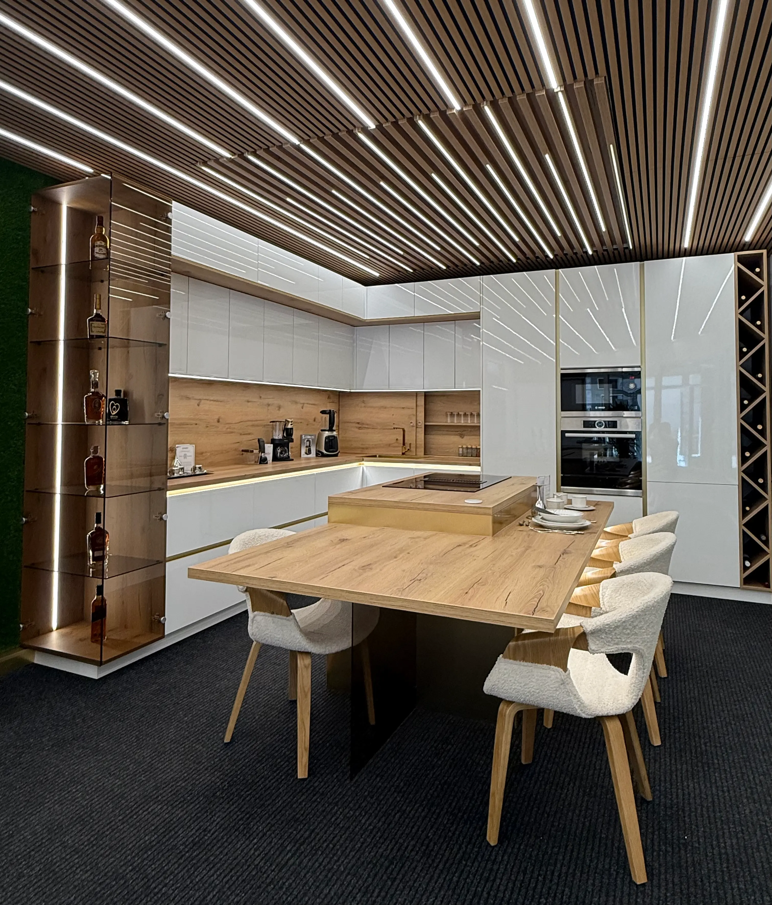
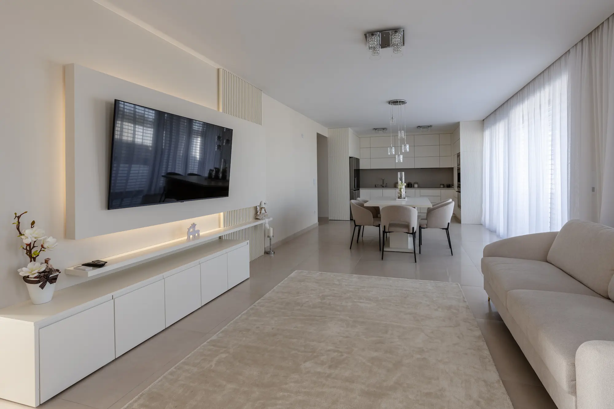
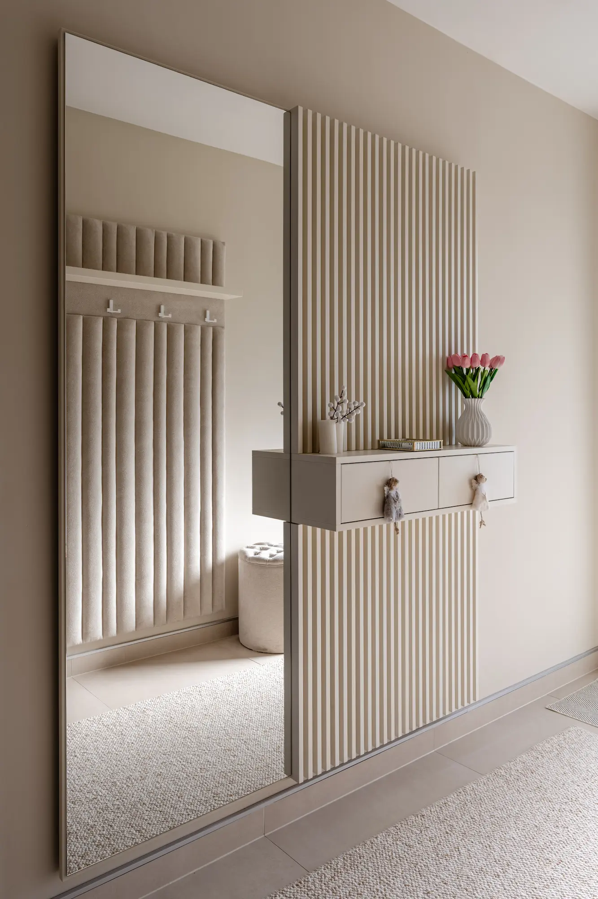
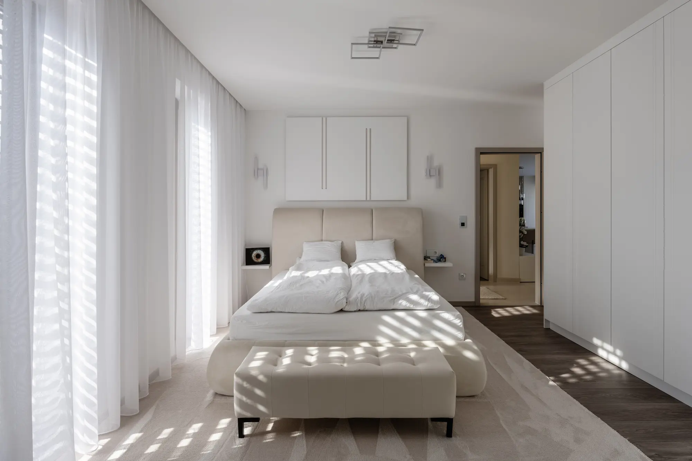

Az XL Bútor Design családi vállalkozás: bemutatótermünkben kész bútorok, szőnyegek és függönyök közül válogathat, műhelyünkben pedig egyedi konyhák és beépített bútorok készülnek. Hisszük, hogy a jó bútor nem csak szép — évtizedekig szolgál.
Nálunk a tervezéstől a beépítésig minden egy kézben van, így minden részletért felelősséget vállalunk. Látogasson el hozzánk, nézze meg front- és anyagmintáinkat személyesen!



